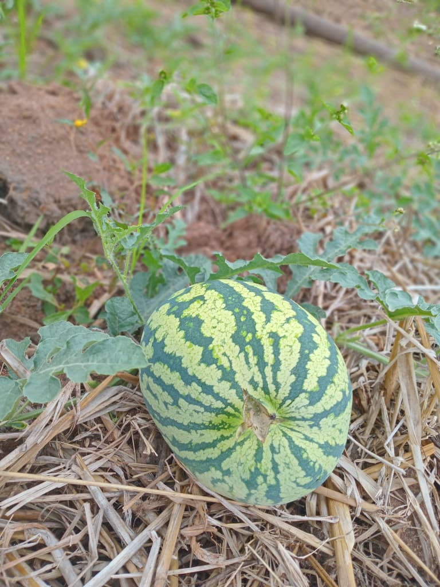

Vegetable Crops
Select a vegetable from the dropdown or search above to view its image, botanical classification, production, and harvesting details.

Learn about vegetable crops step by step. Search for a crop or select one from the list.
Select a vegetable from the dropdown or search above to view its image, botanical classification, production, and harvesting details.
This website provides educational information about vegetable crop production, botanical classification, ecological requirements, crop management, harvesting, post-harvest handling, value addition, and marketing.
For more information about vegetable crop production, contact Dr. Ibrahim John.